使用查询结果
查询在文档中找到有用的内容后，你可以把它变成透镜，这样每次查看文档时，透镜都会标注它的命中。查询也可以存储为自定义分析器，在建立索引时运行。能在项目中找出文档的查询，还可以变成智能文档集。操作菜单则让你直接对结果执行操作（例如为片段编码、把文档收进一个文档集、为命中添加书签、冻结词表，以及把词添加到词典）。
阅读本章需要你已经熟悉查询的构建和运行，这些内容见第 15 章“构建查询”和第 16 章“查询结果与统计”。示例使用示例项目“气候辩论”，可以通过文件 ▸ 导入 ▸ 示例项目把它添加到资料库中。“气候辩论”自带两个已存储的查询，名为“紧迫性话题”和“关键词：行动派”。本章提到的其他查询，都可以按下文的描述自行构建。
概念与关键术语
本章所说的片段，指查询找到的任何一段文本。词、句子、编码实例和话轮都是片段。
查询透镜是同时出现在阅读器透镜菜单中的已存储查询（见第 6 章“透镜”）。启用后，LemmaLoom 会在当前文档上运行这个查询，并按你的设置标注命中，方式与内置透镜高亮词类和否定相同。编辑已存储的查询并再次存储后，它的透镜也会自动更新。
生成的分析器是根据查询创建的自定义分析器。它使用 LemmaLoom 为它生成的 JavaScript 代码，与你在窗口 ▸ 分析器中编写的脚本类似。这种分析器在建立索引时自动在所有项目中运行（见第 21 章“分析与索引”）。分析器标注的文本称为发现，与分析器处理过的每个文档存储在一起。生成的分析器相当于查询在某一时刻的快照。
一致性检查在几个文档上同时运行查询和生成的分析器，并比较两者的结果。只有两者找到的片段完全相同，才能存储生成的分析器。
已链接的分析器是一种生成的分析器，它记得自己来自哪个已存储的查询。此后只要你更改并存储这个查询，分析器就会显示已过期。
冻结列表是从搭配词或关键词查询中取出的一份固定词表。搭配词带有得分（即关联值），关键词带有对数似然值。这些得分成为冻结列表中每个词的权重。查询可以在任何范围内查找冻结列表中的词。
透镜、分析器还是智能文档集
通常，你会先在几个文档上试用一个查询，直到结果令人满意、值得保留为止。怎样存储它，取决于你要用它做什么。一般来说，最好先从透镜开始，因为透镜在你阅读时实时显示命中，并随时反映你存储的更改。透镜适合仍在继续推敲的模式，也适合在细读时查看模式。
分析器更适合已经定型的模式，因为它在每个项目中都适用，并把结果存储在每个文档中。其他查询可以使用这些已存储的结果，例如对结果计数、在文档分组之间比较，或者把命中与编码联系起来。分析器只能使用词、句子和语法结构；而且一旦根据某一版查询创建，它就一直沿用那一版，直到你更新它。
智能文档集是存储查询的第三种形式。这时，查询依据文档的属性和特征挑选文档，而非依据内容中的模式。例如，智能文档集可以收入读者众多的行动派文本。智能文档集出现在导航栏中，可以像其他文档集一样使用。
三种形式的适用范围不同，对查询更改的跟随方式也不同：
| 查询透镜 | 生成的分析器 | 智能文档集 | |
|---|---|---|---|
| 来源 | 列出片段的查询 | 列出片段、只考察词和句子及其语法的查询 | 按文档信息列出文档的查询 |
| 得到什么 | 阅读器中的着色和图例 | 阅读器中的着色，以及其他查询可以搜索的已存储发现 | 导航栏中的一个文档集，其成员根据它的条件确定 |
| 适用范围 | 已存储查询可用的任何地方（一个文档、一个文档集、一个项目或所有项目） | 所有项目中属于其语言的每个文档 | 它所在的项目 |
| 何时计算 | 每次在文档中启用透镜时 | 建立索引时，每个文档一次 | 每次使用这个文档集时 |
| 更改查询之后 | 跟随已存储的查询 | 显示已过期，直到你更新它 | 保留自己的一份条件副本 |
操作菜单与这三者不同，它只对你的结果执行一次，根据结果创建文档集、书签和编码实例。此后，这些内容就独立于查询了。
“存储”和“操作”菜单的位置
每个查询的构建器上方都有一条横栏。无论你在哪里使用查询（文档的查询分面、文档集和项目本身的查询视图，或者独立的查询窗口），这条横栏都会出现。本章介绍的命令位于横栏的两个菜单中。存储（图标是一个方框和一个指向框内的箭头）用于存储查询，并把它变成透镜或分析器。操作（带圆圈的省略号图标 ⋯）作用于查询刚刚得出的结果。第一行放不下所有按钮时，这两个菜单会移到第二行，位于该行的右端；否则它们位于运行查询（三角形按钮）的右侧。横栏其余部分的说明见第 15 章“构建查询”中的构建器。
存储菜单中有存储、存储为…等选项，已存储的查询还有重命名…。菜单再往下，一条分隔线之后是存储为透镜…（已经是透镜的查询则显示移除透镜）和存储为分析器…。查询已存储时，这两项下方还有删除查询。在查询视图和查询窗口的左栏中，已存储查询的快捷菜单里也直接有删除查询。删除查询会立即删除查询。如果构建器中载入的正是这个查询，构建器会从一个空白的新建查询重新开始。编辑 ▸ 撤销删除查询可以恢复这个查询。
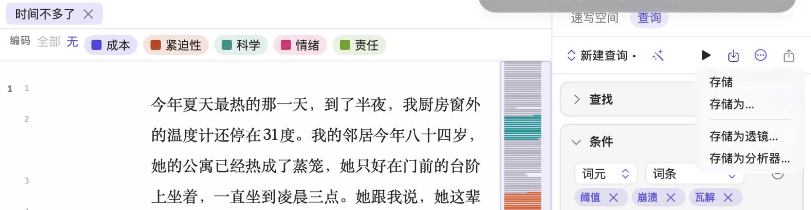
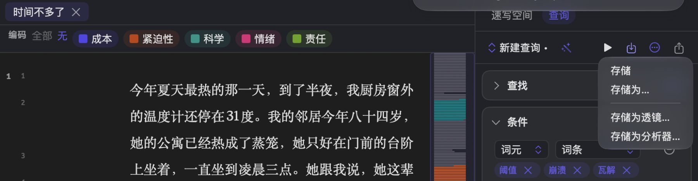
把查询存储为透镜
如果想在阅读的同时运行查询，透镜就是你要找的形式。“气候辩论”中有一个名为“紧迫性话题”的查询存储为透镜。凡是含有紧迫、危机、紧急、期限中任何一个词，并且与编码为“紧迫性”或其任一子编码的片段重叠的句子，这个透镜都会标注。第 15 章“构建查询”中的第一个查询详细说明了这个透镜的查询；它通过词元匹配查找句子，并带有一个针对编码实例的上下文行。显示条件设为列表模式。
如果要把查询存储为透镜：
- 运行查询，看看它的几个命中。在文档的查询分面中，点按一个命中，阅读器就会滚动到它所在的位置。在查询视图或查询窗口中，连按两次一个命中，或者右键点按它并选取跳转到来源。
- 确认显示设为列表。
- 打开存储菜单，选取存储为透镜…。
- 在存储为透镜对话框中输入名称。透镜菜单会显示这个名称。
- 在可用范围中选择在哪里提供这个透镜（见下表）。
- 点按存储。
查询一经存储，就立即成为透镜。在查询名称菜单中，或者在查询视图或查询窗口的左栏中，你会看到每个透镜的查询名称旁边都有一副眼镜。
对于已经存储的查询，存储为透镜…会跳过对话框：它按查询当前的状态（包括未存储的更改）存储查询，并立即将其变为透镜。
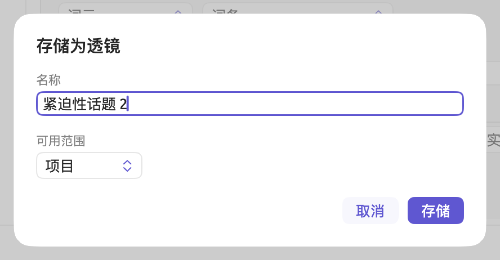
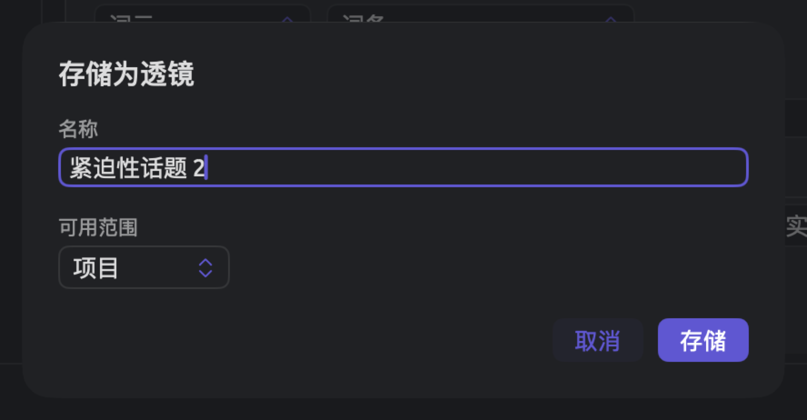
可用范围决定哪些文档提供这个透镜。可用范围最好选择能涵盖你的文档的最小范围，这样其他文档的透镜菜单就能保持简短。对话框显示的选项取决于你当前的工作位置，默认选项总是列在第一位。
| 可用范围 | 在以下位置存储时提供 | 透镜出现在 |
|---|---|---|
| 文档 | 文档的查询分面 | 仅该文档 |
| 文档集 | 文档集的查询视图，或范围为某个文档集的查询窗口 | 文档集中的每个文档及其译文 |
| 项目 | 文档、文档集或项目 | 项目中的每个文档 |
| 所有项目 | 任何位置 | 每个项目中的每个文档 |
在范围为所有项目的查询窗口中工作时，只会出现一个选项，即所有项目。
在阅读器中使用查询透镜
查询透镜的启用方式与普通透镜相同：
- 打开一个可以使用该透镜的文档。
- 点按阅读器顶部标题栏中的透镜菜单。查询透镜按名称列在菜单的下半部分，位于书签、编码和你的词典之后。
- 选取这个透镜。勾号表示它已启用，它的图例项会出现在图例中。
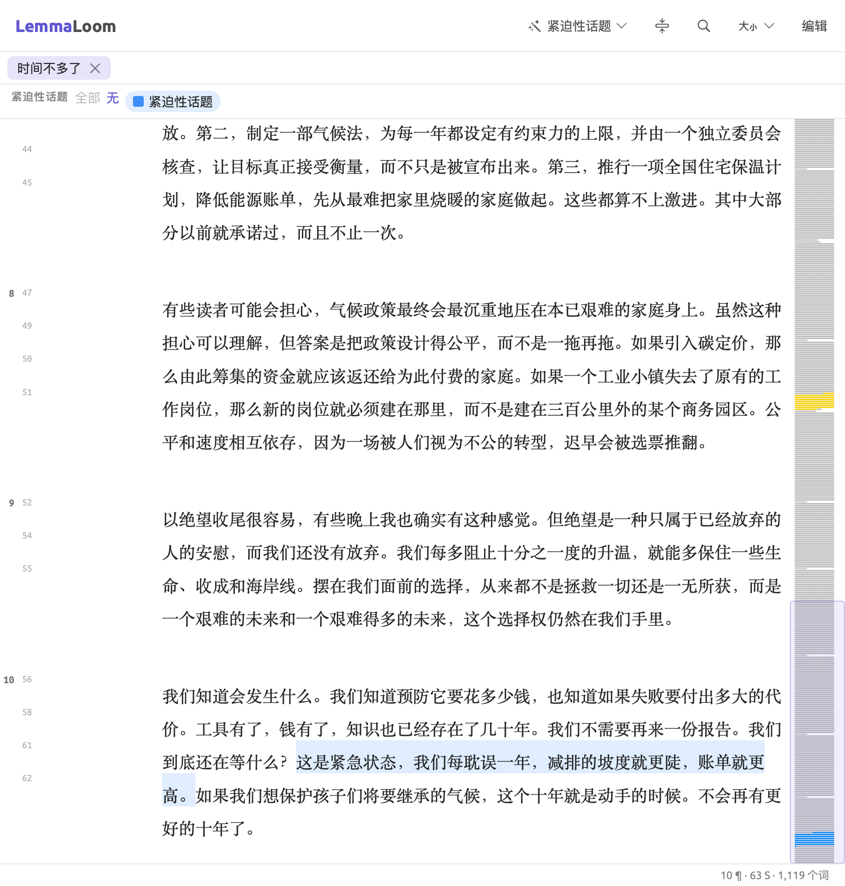
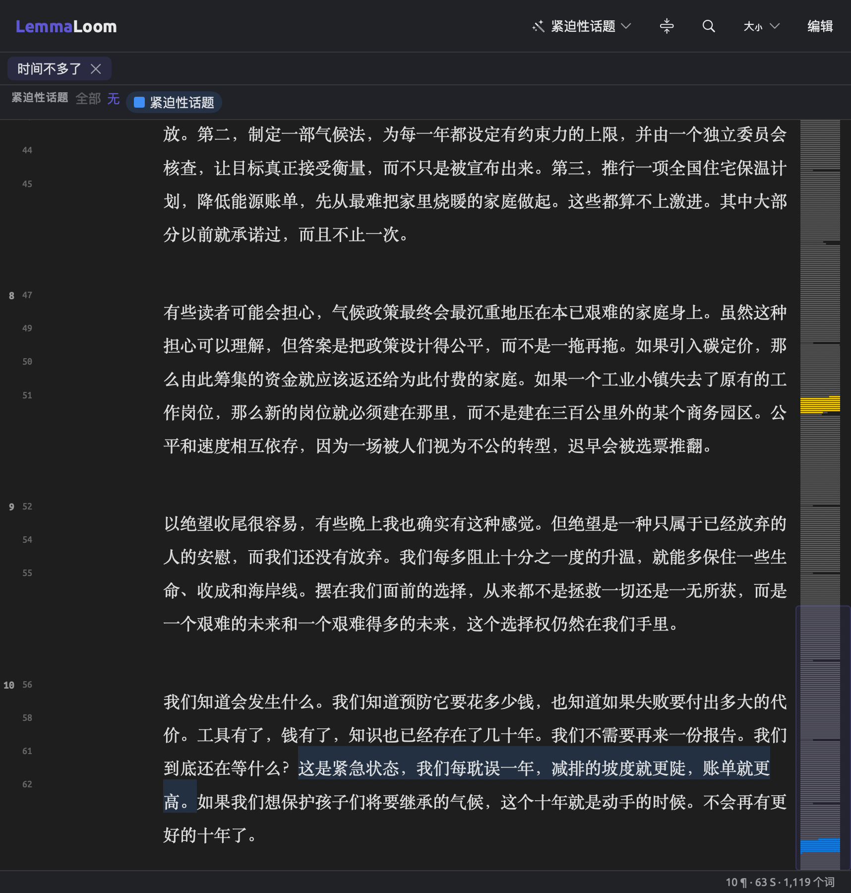
查询生成图例项的规则如下：
- 没有类别的查询只生成一个图例项，名称就是你给查询起的名字。
- 有类别的查询为每个类别生成一个图例项，颜色和样式按你在类别条件中的选择设置。只有属于某个类别的命中才会被标注。
- 使用着色依据的查询，会为某个字段的每个不同值各建一个类别（见第 15 章“构建查询”中的类别与着色依据）。打开的文档中出现多少个不同的值，就生成多少个图例项，但总数不超过 16 个。图例项按字母顺序排列，颜色也按这个顺序分配。因此，同一个值在两个不同的文档中可能显示为两种不同的颜色。
在当前文档中启用透镜时，LemmaLoom 会运行它背后的查询。每当你修改并存储查询，或者重命名查询，它都会再运行一次。文档中的编码实例或书签发生变化时，LemmaLoom 也会重新运行查询。因此，“紧迫性话题”会立即响应你的编码。在“时间不多了”中，一旦把编码“时间节点”应用到以一个在所有现任官员都退休之后才到期的期限开头的句子上，标注就会出现。
要停用透镜，在透镜菜单中再次选取它即可，也可以选取全部清除、清除透镜或清除标注；清除标注还会停用书签、编码以及其他查询透镜和词典透镜。
如果决定不再提供这个透镜，请载入要从透镜菜单中移除的查询，在它的存储菜单中选取移除透镜。查询本身保持不变。不过，删除查询也会一并移除透镜。编辑 ▸ 撤销移除透镜和编辑 ▸ 撤销删除查询都能恢复透镜。
透镜启用后，可以选取文档 ▸ 自动编码…（⇧⌘A）或透镜菜单底部附近的对应项。这会打开自动编码对话框，为透镜标注的每个片段编码。如果同时启用了多个查询透镜、词典透镜或分析器透镜，这两个菜单中会各有多项，每项对应一个透镜，例如使用紧迫性话题自动编码…，⇧⌘A 对应第一项。以“紧迫性话题”为例，它没有类别，所以它的对话框只有一行，名为“紧迫性话题”。第 7 章“编码”中的从透镜自动编码有更详细的说明。
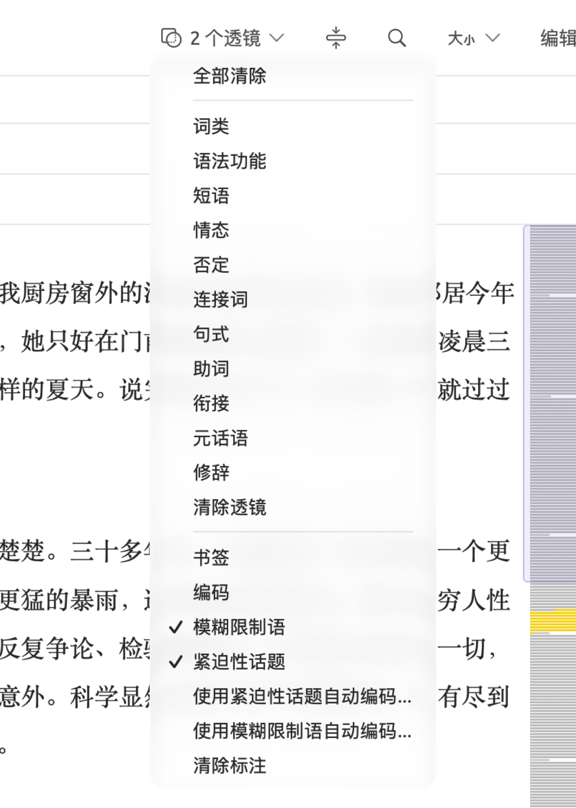
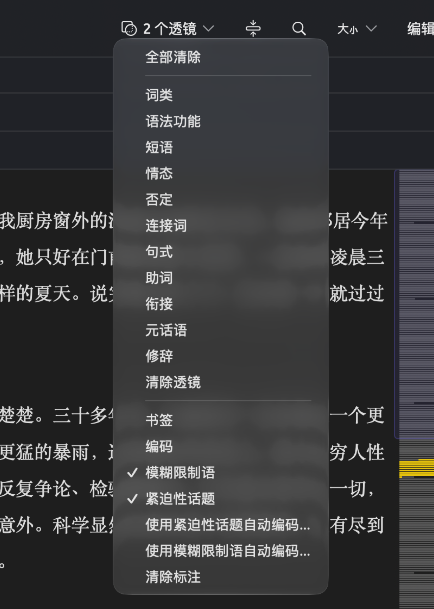
哪些查询可以成为透镜
透镜只在当前文档中标注若干段文本，所以查询应当返回一个单纯的片段列表。不满足这一要求时，存储为透镜…会停用；将鼠标指针悬停在这一项上，可以看到确切原因。要生成透镜，查询必须满足以下条件：
- 显示设为列表；
- 查找指定以下某一种片段，即词、模式匹配、句子、段落、文本匹配、短语、名词块、发现、编码实例、备忘录、书签或话轮；
- 按得分以外的任何条件排序。带冻结列表的查询才提供得分（见本章后文冻结值）；
- 查询的类别条件中定义的类别不超过 16 个；
- 查询本身已经可以运行。
本章后文的某一项为何不可用详细列出了所有不可用的情况。
把查询转换为分析器
自定义分析器是一些简短的 JavaScript 程序，在每个文档建立索引时运行（见第 20 章“自定义分析器”）。通过存储为分析器…把查询存储为自定义分析器时，LemmaLoom 会替你生成所需的代码。生成的自定义分析器具有以下特点：
- 在所有项目中，对你所选语言的每个文档运行，在文档信息中移除了它的输出的文档除外（见第 21 章“分析与索引”）；
- 结果在每个文档上只计算一次并存储起来，不必每次启用透镜时重复计算；
- 与其他分析器一起出现在透镜菜单中，也可以配合自动编码…使用；
- 把查找设为发现即可搜索它的结果，因此可以在其他查询中使用；
- 源代码可以在窗口 ▸ 分析器中查看、测试和编辑。
“紧迫性话题”不能存储为自定义分析器，因为它的上下文用到了编码实例，而编码实例在建立索引时无法使用，所以存储为分析器…已停用，原因是使用编码实例或备忘录。不过，下面的示例说明了如何从查询生成自定义分析器。示例查询名为“紧迫性用词”，存储在项目的查询视图中，可用范围设为项目。它查找词，只有一个设为词元的文本行，内容为阈值、崩塌、瓦解、期限、目标和倒计时。瓦解出自文档“时间不多了”，文中说冰盖、森林和洋流会开始自行瓦解。它的类别条件中有两个类别。“临界点”类别有一个设为词元的文本行，查找阈值、崩塌和瓦解；“时间节点”类别有一个词元文本行，查找期限、目标和倒计时。这两个类别与“紧迫性”的两个子编码同名，所以自动编码对话框能把它们对应起来（见本章后文自动编码…）。
用查询创建分析器的步骤如下：
- 先用存储或存储为…存储查询（见下面的说明）。
- 打开存储菜单，选取存储为分析器…。
- 一致性一行显示旋转的进度指示器时请稍候，然后检查对话框（说明见下文）。
- 如有需要，更改名称或语言。
- 点按存储。
以下是存储为分析器对话框中的各个字段：
- 名称一开始是查询的名称。
- 语言提供英语、德语和中文三个选项。一开始选中的是查询所涉及文档的语言；如果这些语言都不在三者之中，则选中英语。只勾选查询所针对的语言。例如，针对中文词元的查询应当在中文文档上运行。
- 图例以相应的颜色显示查询的每个类别。如果查询没有类别，图例只显示一个名为匹配的条目。
- 源包含为查询生成的脚本。可以选中并拷贝其中的内容，在别处使用；要编辑脚本，请先存储，再使用窗口 ▸ 分析器。
- 一致性显示一致性检查的结果（见下文一致性检查）。
- 文档显示你所有项目中属于所选语言的文档数。分析器会处理其中的每个文档。
出现以下任一情况时，存储已停用；将鼠标指针悬停在存储上可以了解详情：
- 正在检查一致性表示一致性检查正在进行。
- 源代码有错误表示生成的脚本不符合所有分析器都必须满足的要求。一致性的内容会改为显示错误信息。
- 发现不一致表示一致性检查发现了差异。
- 名称为空或未选择语言表示某个字段还需要填写。
如果查询无法表示为脚本，原因会显示出来，存储按钮上也会显示。
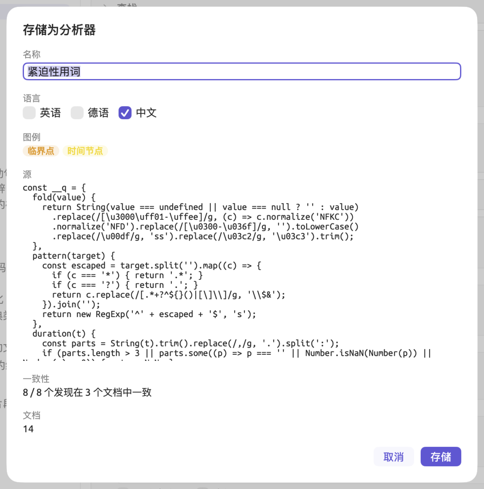
点按存储后，分析器会出现在窗口 ▸ 分析器中，LemmaLoom 随即在后台对所有项目中属于其语言的文档运行它。进度可以在窗口 ▸ 活动（⌥⌘0）中查看。所需时间取决于文档数量和你的 Mac 的性能。编辑 ▸ 撤销添加分析器可以撤销这一操作。
一致性检查
生成的脚本独立于查询，自行查找片段。但在存储之前，LemmaLoom 会核实它找到的文本段与查询找到的完全相同。核实时，LemmaLoom 从查询范围内已建立索引的文档中最多取三个，在这些文档上分别运行查询和脚本，再比较两者找到的文本段。两个文本段如果在同一个句子中起止于同一个词，并且属于同一个类别，就算作一致。
对于“紧迫性用词”，一致性下的这一行显示8 / 8 个发现在 3 个文档中一致。8 / 8 表示脚本和查询完全一致，即一方找到的每个发现，另一方也都找到了。左边的数是两者共同找到的发现数，右边的数是查询和脚本中至少一方找到的发现总数。如果两个数不同，就说明存在不一致，也就是两者找到的文本段有出入。
举一组虚构的数字，假设在这三个文档中，查询找到 9 段文本，脚本找到 10 段。脚本找到了这 9 段中的 8 段，漏掉 1 段，同时还多找到 2 段查询没有找到的文本。查询和脚本共同找到的有 8 段。把两个总数相加，这些共同的文本段会被算两次，所以至少一方找到的文本段数为：
其中 、 和 分别是查询找到的、脚本找到的和两者都找到的发现数， 是至少一方找到的发现总数。在这个例子中，把数字代入公式得到 ，这一行显示8 / 11 个发现在 3 个文档中一致。脚本漏掉 1 段，又多找到 2 段，所以总共有 3 处不一致。
只要有不一致，就不能存储脚本。存储已停用，LemmaLoom 会提示发现不一致；这种情况下，请把查询保留为透镜。
核实使用的是查询所定义的范围。例如，在打开的文档的查询分面中，范围只有当前打开的这个文档。而在文档集或项目的查询视图中，则是该文档集或项目中排在最前的三个已建立索引的文档。要在不止一个文档上核实脚本，请在查询视图或查询窗口中创建分析器。
如果查询范围内还没有已建立索引的文档，LemmaLoom 会显示没有已索引的文档来代替数字，此时存储可用。等范围内的文档建立索引后，请在相应文档的透镜菜单中启用这个分析器，检查它高亮的片段是否与查询找到的完全相同。
哪些查询可以转换为分析器
和所有自定义分析器一样，生成的分析器一次读取一个句子，考察句中的词、短语和名词块，以及每个词的词元、词类、语法标记、形态和依存关系（见第 21 章“分析与索引”）。只有单凭这些信息就能运行的查询，才能转换为分析器。否则存储为分析器…会停用，将鼠标指针悬停在上面可以看到说明原因的提示。
能转换为分析器的查询应当：
- 符合成为透镜的条件（见本章前文哪些查询可以成为透镜）；
- 查找词、模式匹配、句子、短语或名词块；
- 在规则中只使用词、句子和短语的字段；
- 按词、词形或词元匹配文本，并使用词条或词典；
- 只在单个句子之内建立关联，使用重叠、位于其中、包含、范围相同或与之同句关系，并且只关联到词、句子、短语或名词块；
- 没有任何具有行，也没有启用着色依据；
- 不引用否定词、在否定范围内、连接语、情态、拓扑场和助词这几个字段。这些字段专供阅读器的内置透镜使用。
查询“紧迫性用词”符合这些要求。它查找词，无论在规则中还是在类别定义中，都只检验词元。
让分析器与查询保持同步
创建分析器之后，如果你修改并存储了查询，分析器在更新之前仍按原来的查询进行分析。如果分析器是已链接的（由已存储的查询生成，此后源代码没有被手动修改过），LemmaLoom 会察觉两者之间的差异。
对已链接分析器的已存储查询所做的任何修改，都会使窗口 ▸ 分析器中该分析器的条目显示已过期。即使修改只改变结果的排序方式，并不改变结果本身，也同样算数。
在分析器窗口中更新分析器的步骤如下：
- 选取窗口 ▸ 分析器。
- 在左侧列表中，选择显示已过期的分析器。
- 点按更新分析器，它位于名称和语言所在的那一行，在存储的左侧。
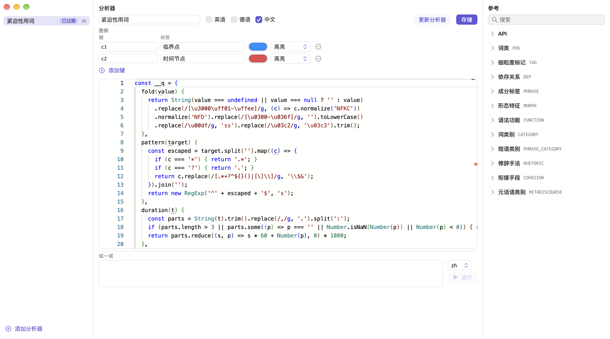
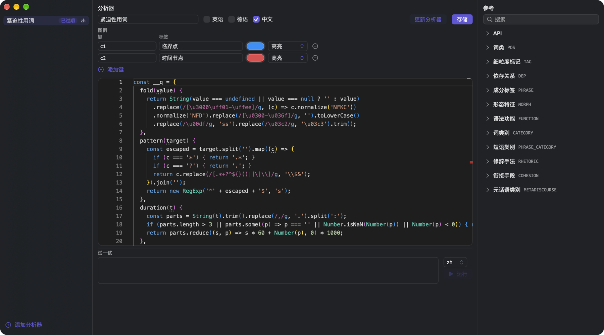
用更新分析器更新时，LemmaLoom 直接把已存储的查询转换为分析器脚本。分析器的名称和语言保持不变，但源代码和图例会被替换，所以你对标签名称或颜色所做的更改都会丢失。如果新脚本有错误，LemmaLoom 会在编辑器正下方提示，分析器则继续使用原来的脚本。
如果已存储的查询已经无法再转换为分析器，这个按钮会停用，并说明原因。更新改变了分析器脚本时，LemmaLoom 会对属于其语言的所有文档重新运行分析器。要撤销最近一次更新，请选取编辑 ▸ 撤销更新分析器。
如果想从查询一侧更新（这样会先运行一致性检查），请打开已存储的查询，再次选取存储为分析器…。如果分析器是已链接的，对话框的标题为更新分析器，并显示现有的名称和语言，两者都可以编辑。此时更新按钮取代了存储，点按它即可应用更改；编辑 ▸ 撤销编辑分析器会让分析器回到编辑之前的状态。
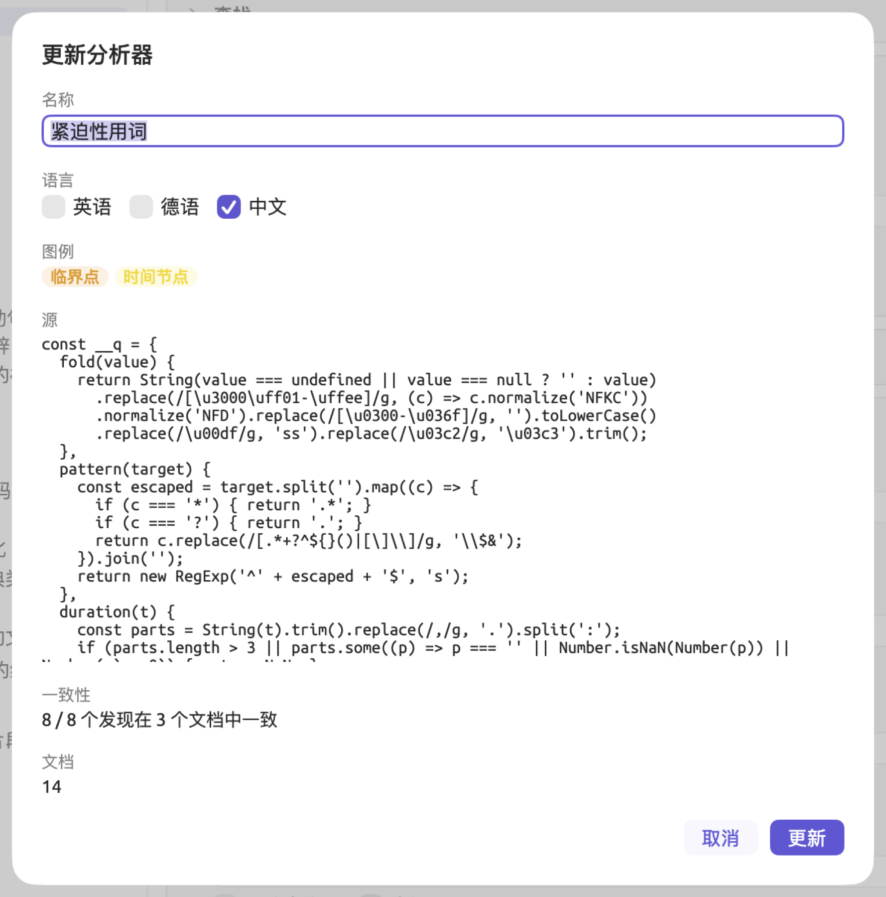
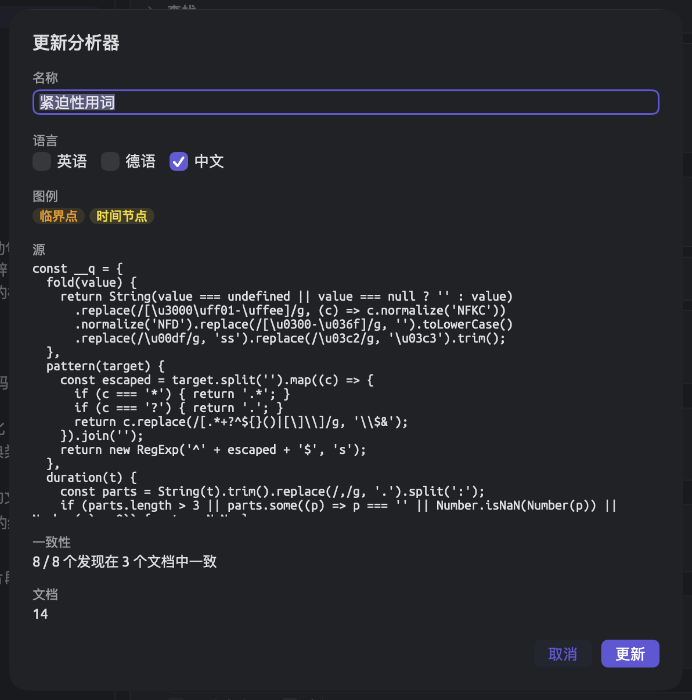
以下两种情况会断开已存储查询与分析器之间的链接：
- 在窗口 ▸ 分析器中修改源代码，然后点按存储。这样分析器脚本就独立于已存储的查询，对查询使用存储为分析器…会另外创建一个新的分析器。编辑 ▸ 撤销编辑分析器会同时恢复原来的源代码和链接。只编辑名称、语言或图例时，链接保持不变。
- 删除查询。分析器会作为未链接的分析器继续工作。
把文档查询存储为智能文档集
智能文档集根据针对文档信息和属性的条件收集文档，每当需要时，它都会依据这些条件确定成员（见第 8 章“文档集、分组、标签和属性”）。如果你已经有一个按文档信息和属性规则挑选文档的查询，就可以把它转换为智能文档集。
在“气候辩论”项目中，项目查询视图里存储的查询“读者众多的行动派”返回文档。它的条件匹配全部两条规则，即“立场”是以下任一“行动派”和“读者数”至少为 100,000（见第 15 章“构建查询”中的添加规则）。结果是“时间不多了”和“来自气候罢课的信”。
把查询存储为智能文档集的步骤如下：
- 在文档集或项目的查询视图中构建查询，或者在范围为某个项目或文档集的查询窗口中构建。
- 运行查询，检查它列出的文档。
- 用存储为…或重命名…，给查询起一个你想用作文档集名称的名字。
- 打开操作菜单，选取存储为智能文档集。
无论查询是在哪个文档集中运行的，智能文档集都从项目的全部文档中选取。假设“行动派”文档集中有一个查询，只有一条规则，即“读者数”至少为 100,000。它返回“时间不多了”和“来自气候罢课的信”；但由它生成的智能文档集还会收入“净零代价高昂”“不必恐慌”“碳税之争”和“电台辩论”。加上“立场”规则，就能把结果限定为行动派。
智能文档集以查询的名称出现在导航栏中，查询的条件以及全部/任一的选择也会一并复制过去。如果查询从未命名，文档集就叫新建查询，或者以生成查询所用的模板命名。你可以直接在导航栏中重命名智能文档集。如需更改，请在文档集的快捷菜单中选取编辑，或者选取项目 ▸ 编辑智能文档集。选取编辑 ▸ 撤销新建智能文档集可以删除这个文档集。
只有当查询定义满足以下要求时，查询的操作菜单中才会显示存储为智能文档集：
- 显示模式为列表，查找参数为文档。
- 范围是一个项目或一个文档集。
- 条件中的规则没有任何形式的嵌套，其中也没有关系、具有行或文本行。
- 所有规则都针对文档信息、属性、标签、分组、语言或格式。
- 没有规则使用冻结列表。
如果条件设为匹配无规则，这一项会停用，因为智能文档集要求匹配全部条件或任一条件。
“操作”菜单
操作菜单作用于刚刚运行的查询的结果。菜单显示哪些项取决于结果的性质；适用但没有内容可处理的项会停用，例如结果列表为空时的为命中添加书签…。在查询视图中，如果没有任何一项适用，整个操作菜单按钮都已停用，查询运行之前显示的原因是无结果，运行之后是无可用操作。在文档的查询分面中，菜单里始终有自动编码…；在查询窗口中，始终有新建窗口。
每一项都作用于整个结果，无论是否用结果上方的筛选字段筛选过（见第 16 章“查询结果与统计”中的筛选结果）。
| 菜单项 | 何时提供 | 作用 |
|---|---|---|
| 自动编码… | 查询位于文档的查询分面中 | 为查询找到的片段编码 |
| 从命中创建文档集 | 显示为列表，查找为某种片段或文档；范围不是所有项目 | 用含有命中的文档建立一个文档集 |
| 存储为智能文档集 | 见把文档查询存储为智能文档集 | 用查询的规则建立智能文档集 |
| 为命中添加书签… | 显示为列表，查找为某种片段；范围不是所有项目 | 为列出的每个命中添加书签 |
| 冻结值 | 显示为搭配词或关键词 | 把查询替换为一个查找所列词语的查询 |
| 添加到词典 | 显示为带一个分组依据键的数量或比较，或者为搭配词或关键词；查找为词或文本匹配；范围所属的项目有词典 | 把列出的词添加到某个词典类别中 |
| 新建窗口 | 查询位于查询窗口中 | 打开另一个查询窗口，其中是同一范围中的一个新查询（见第 15 章“构建查询”中的查询窗口） |
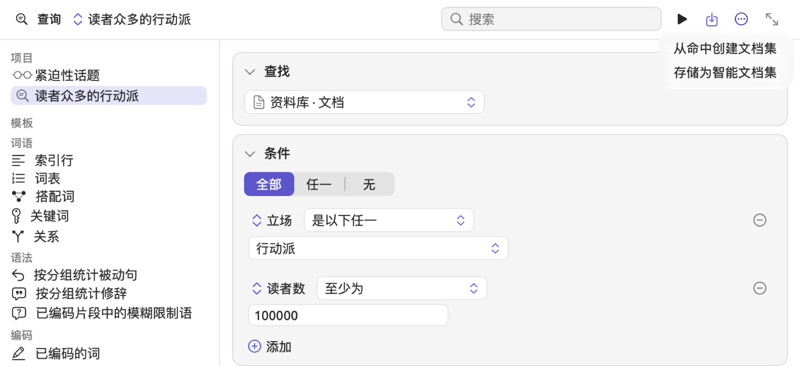
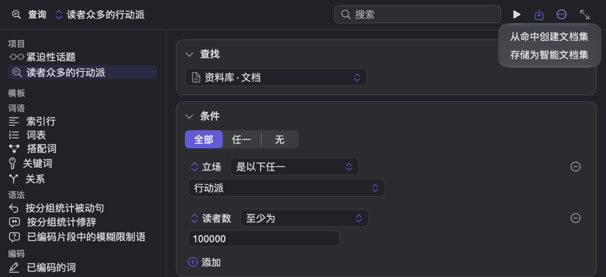
自动编码…
自动编码…直接从查询出发，为查询找到的每个片段自动编码。如果你想在文档中或整个文档集中把某个模式编码一次，而不必在阅读时看到它，这一功能会很有用。它只出现在文档查询分面的操作菜单中，因为它依赖打开的文档的自动编码对话框。
在文档“时间不多了”的查询分面中选中“紧迫性用词”，并在文档下选择“行动派”文档集，运行这个对话框，就会在该文档集中用到这些词的五个文档里为这些词出现的每一处编码；“希望要靠行动”中一处也没有。由于自动编码对话框中的两行“临界点”和“时间节点”与现有编码同名，这两个编码会被选为要应用的编码。

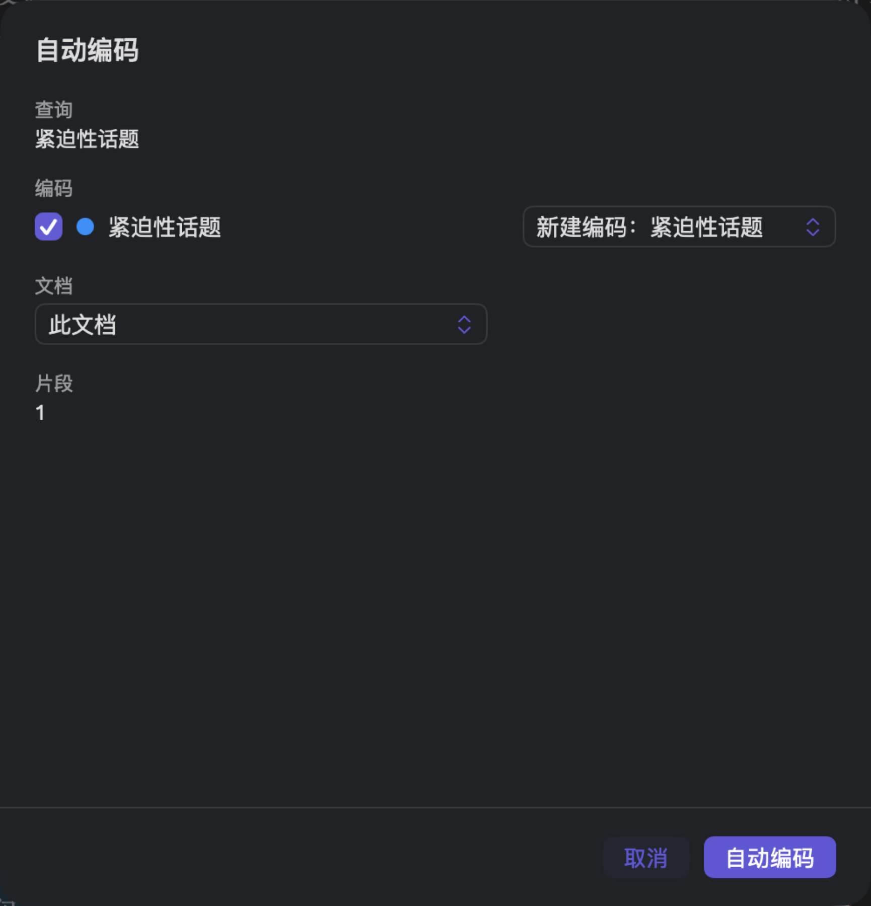
从查询运行自动编码…的步骤如下：
- 在文档的检查器中打开查询分面（显示 ▸ 检查器 ▸ 多重模式，然后选择查询）。
- 构建查询，或者从查询名称菜单中载入一个。
- 打开操作菜单，选取自动编码…。
- 在自动编码对话框中，查询一行显示查询的名称。编码下，查询的每个类别各占一行；没有类别的查询只有一行，以查询命名。取消勾选你不需要的行。
- 为每个勾选的行选取一个编码，或者保留新建编码：…，以这一行的名称和颜色创建一个顶层编码。只有这次运行为这一行找到了片段，才会创建这个编码。名称与这一行的名称相同（不区分大小写和重音符号）的编码会被自动选中。
- 在文档中，选择此文档、项目的某个文档集或整个项目。选择此文档时，片段显示查询为勾选的各行找到了多少个片段。
- 点按自动编码。运行期间，进度显示已完成的文档数；停止会在当前文档完成后结束运行。
- 进度显示添加的编码实例数后，点按完成。
对话框正在载入片段时（即正在加载），或者没有选中任何一行时（未选择任何内容），自动编码按钮会停用。
从查询启动自动编码时：
- LemmaLoom 使用构建器中当前的查询，无论它此前是否已经存储。
- 对于文档集或整个项目，查询会在每个原文文档上分别运行，就像你逐个打开这些文档并在其中运行查询一样。译文只有在本身就是当前文档时才参与；从“时间不多了 (英语)”开始，就会用它代替“时间不多了”。与手动编码一样，生成的每个编码实例也会添加到文档的各个译文中。
- 自动编码…停用的原因与存储为透镜…相同（详见上文哪些查询可以成为透镜）。
- 整个操作可以用编辑 ▸ 撤销自动编码（⌘Z）作为一步撤销，这会移除运行期间生成的每个编码实例和创建的每个编码，点按停止之前生成的编码实例也会一并移除。
从命中创建文档集
从命中创建文档集会建立一个普通文档集，其中包含当前查询有命中的所有文档。文档集以查询的名称命名，并立即出现在导航栏中。
以“气候辩论”查询视图中的一个查询为例，它查找词元为时间的句子，存储为“提到时间”。它的命中分布在四个文档中，即“我们为什么封路”“农民不是敌人”“2024 热浪报告”和“电台辩论”。因此，使用操作 ▸ 从命中创建文档集会建立文档集“提到时间”，其中正好是这四个文档。“时间不多了”中虽然也有词元时间，但只出现在标题中，正文里没有。
所有命中都计入文档集，包括因显示条件中的限制或选项条件中的上限而没有列出的命中（见下文为命中添加书签）。文档集收录的是原文，所以命中位于译文中时，加入文档集的是原文文档，而非译文本身；“时间不多了 (英语)”中的命中会把“时间不多了”加入文档集。对于查找文档的查询，文档集只包含列出的文档。文档集是一份固定的文档名单。编辑 ▸ 撤销新建文档集会删除这个文档集。
为命中添加书签
为命中添加书签…为列表中的所有命中添加书签，方便你以后再找到这些片段，例如借助书签透镜。
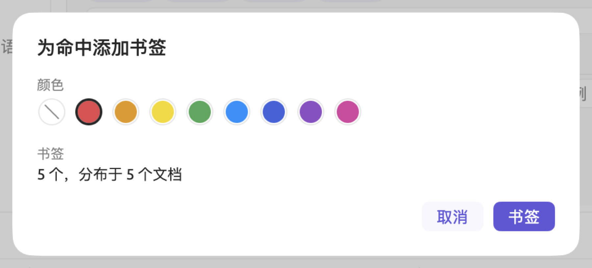
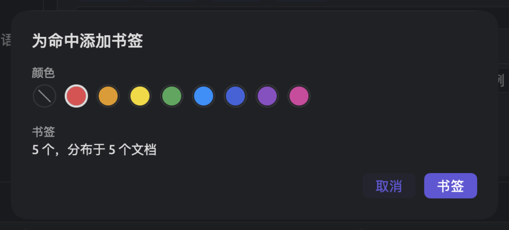
为查询的命中添加书签：
- 运行查询，显示设为列表。
- 打开操作菜单，选取为命中添加书签…。
- 在为命中添加书签对话框中，选取一种颜色。
- 查看书签一行，例如42 个，分布于 9 个文档。这一行统计的是新书签的数量，不含已有书签的命中。
- 点按书签。
每个书签都以查询的名称作为评论。
- 只有列表中出现的命中才会加上书签。列表的上限是选项条件中的上限参数（除非另行设定，否则为 5,000 个命中）；如果勾选了显示条件中的限制，列表会更早截止。如果列表下方的一行显示类似显示 5,000 / 6,212的字样，请先提高上限，或者取消勾选显示条件中的限制，再添加书签。
- 如果某个命中与另一个书签的起止位置完全相同（不论书签是什么颜色），这个命中会被跳过。如果所有命中都已有这样的书签，书签按钮会变为不可用，原因是已添加书签。
- 与手动添加的书签一样，通过查询添加的书签也会自动出现在同一文档的其他语言版本中。
- 只需一次编辑 ▸ 撤销为命中添加书签，就能清除所有新添加的书签。
冻结值
搭配词或关键词查询得出的结果只针对运行它的那些文档。而借助冻结值，你可以根据结果生成一份固定的词表，在任何需要的地方查找这些词。一种常见的用法是先找出区分两组文档的词，再用这些词搜索第二组文档。
例如，“气候辩论”的“行动派”文档集中有一个已存储的查询“关键词：行动派”。它列出行动派文本比怀疑派文本用得更多的关键词。把这份列表冻结，并用它在项目中存储一个新查询之后，就可以在“怀疑派”文档集中载入这个新查询，用按词元分组的数量查看怀疑派用到了行动派的哪些关键词，以及各用了多少次。
选取操作 ▸ 冻结值后：
- 结果的前 200 行会转换为一个冻结列表，以原来的查询命名。对于关键词查询，只使用正关键词，即这个文档集比参照语料用得更多的词。结果中每一行的得分成为相应词的权重。
- 构建器中的查询变为一个新的未存储查询。它查找词，规则是词元属于冻结列表（是以下任一）；根据原来的查询所统计的对象，规则也可能针对词或词类。
- 新查询沿用被冻结查询的名称。虽然名称相同，它实际上是一个完全独立的查询。存储时需要输入名称。
- 编辑 ▸ 撤销冻结值会恢复原来的查询，连同它尚未存储的更改。
- 编辑新规则中的任何词，都会使它变成一份没有权重的普通列表。


在查询视图或查询窗口中，你可以在处理冻结列表的同时，把两份列表并排显示。做法是在冻结之前，点按结果栏右端的在窗口中打开结果。（见第 16 章“查询结果与统计”中的在窗口中查看结果。）
在别处查找冻结列表中的词：
- 运行搭配词或关键词查询，检查它的列表。
- 打开操作菜单，选取冻结值。构建器中现在是一个查找所列词语的查询。
- 打开存储菜单，选取存储为…，为查询命名。把可用范围设为包含你要搜索的文档的位置；如果要在另一个文档集中载入这个查询，请选择项目。
- 打开要在其中搜索的查询视图，从查询名称菜单或左栏中载入这个查询。
- 把显示设为你想看的内容，例如数量，并以词元作为分组依据键，这样会列出每个冻结词出现的次数。
在“怀疑派”文档集中使用数量，得到的是原始次数。怀疑派文本与行动派文本在篇数和长度上都不同，应当用比率把这种差异考虑进去。因此，如果想得到一个能与在“行动派”文档集中运行同一查询的结果相比较的比率，请在显示命中的菜单中选取每万词（见第 16 章“查询结果与统计”中的度量）。
带冻结列表的查询可以按得分为结果排序，依据片段中所含冻结列表词语的权重为片段排名（见第 17 章“查询模式与发现”中的类似某编码的片段）。不过，透镜需要得分以外的排序方式。
添加到词典
添加到词典会把结果中的词添加到项目某个词典的一个类别中。如果你生成的频率表、搭配词表或关键词表中有应当添加到某个类别的词，就可以使用它。
在“气候辩论”中，词典“模糊限制语”的类别“近似语”收录的是表示近似数量或数字的词，即大约、左右、大致、差不多、将近、几乎和或多或少。另有一些词，如常常、通常和大多，也以类似的方式让说法有所保留，但不一定修饰数量或数字。在某些研究中，常常、通常和大多甚至可能被归入近似语。
项目查询视图中的一个查询可以显示文档中出现了其中哪些词。它查找词元为大约、差不多、大致、常常、通常、大多或偶尔的词，显示设为数量，并有一个分组依据键，同样是词元。结果共有六行，即大约 9 次、大多 5 次、大致 5 次、通常 5 次、差不多 4 次、常常 3 次。使用操作 ▸ 添加到词典 ▸ “模糊限制语” ▸ “近似语”后，常常、大多和通常这三个词被添加进去，另外三个词则已经在这个类别中。
差不多的次数既包括文档“转型谁来买单”中的差不多没有一个买得起，也包括文档“电台辩论”中的你们的海报差不多就是这么说的。前一处估计的是人数，后一处转述的是别人的说法。请记住，出现次数说明不了词的用法，所以在把词添加到类别之前，先浏览一些结果。
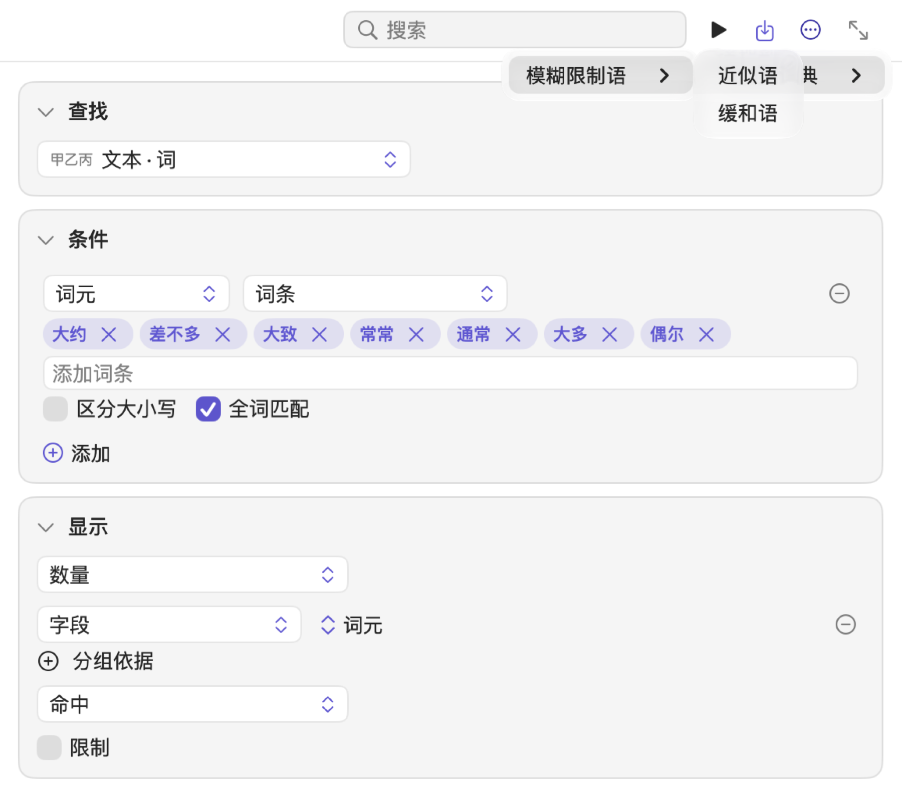
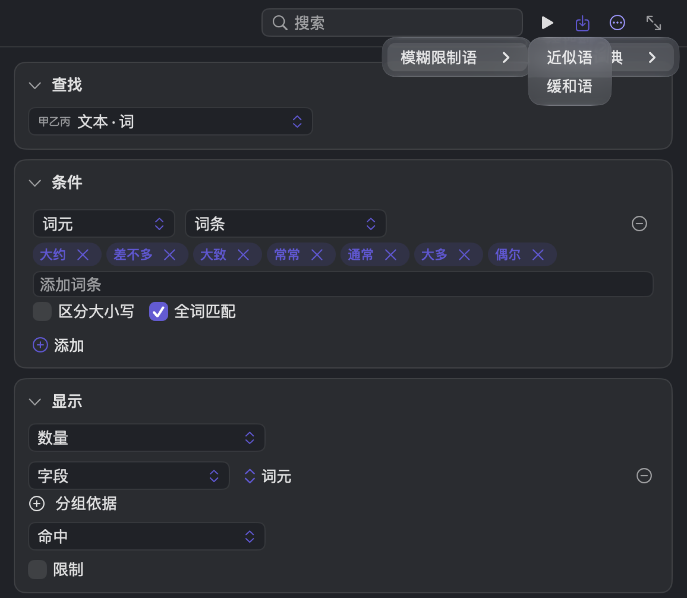
把结果中的词添加到词典：
- 运行查询。
- 打开操作菜单，选取添加到词典。
- 在子菜单中选取词典，再选取类别。
选取类别后，词条会立即添加进去。
- 每一行的标签作为词条添加，最多取前 200 行。对于关键词，只添加正关键词。如果只想添加数量结果中的部分行，请先勾选显示条件中的限制并选择一个数值。
- 类别中已有的词条会被跳过；比较词条时不区分大小写。类别中的词条保持按字母顺序排列。
- 只列出查询所在项目的词典。如果项目中没有词典，这一项会隐藏（见第 19 章“词典”中的创建词典）。
- 编辑 ▸ 撤销添加到词典会一步移除所有添加的词条。
如果只想添加几个词条，或者添加结果中没有的词条，请把它们拷贝并粘贴到项目词典视图中该类别的添加词条字段里，每个词条占一行（见第 19 章“词典”中的添加和移除词条）。
某一项为何不可用
存储为透镜…、存储为分析器…或自动编码…停用时，将鼠标指针悬停在上面就能看到原因。即使同时存在几个原因，一次也只显示一个；解决这一个之后，下一个可能随之显示。表中列出的前六个原因会使这三项都不可用，其余原因只影响存储为分析器…。
| 原因 | 含义 | 如何更改 |
|---|---|---|
| 不是列表 | 显示没有设为列表。 | 把显示设为列表。 |
| 不是文本片段 | 查找设为文档、编码、文档集或其他资料库条目，它们在文本中没有位置。 | 改为查找某种片段。 |
| 成对结果 | 查找为链接或对齐；每个命中连接两个位置。 | 查找只位于一处的某种片段。 |
| 评分列表 | 列表按得分排序。 | 选择另一种排序方式。 |
| 超过 16 个类别 | 类别条件中有超过 16 个类别。 | 合并或移除一些类别。 |
| 不完整 | 某条规则尚未完成，或者有其他原因使查询无法运行。 | 把查询补充完整；结果区域会说明是什么阻止了查询运行。 |
| 使用分析器发现 | 查找为发现，或者某条规则涉及发现。 | 把查询保留为透镜。 |
| 使用原始文本 | 查找为文本匹配或段落；某个文本行按文本匹配或使用正则表达式；或者某条规则检验段落，或检验片段的文本或长度。 | 按词、词形或词元匹配，并使用词条或词典。 |
| 使用媒体 | 查找为话轮，或者某条规则使用与之同一话轮。 | 把查询保留为透镜。 |
| 使用译文 | 某条规则使用译为。 | 把查询保留为透镜。 |
| 使用编码实例或备忘录 | 查找为编码实例、备忘录或书签；某条规则检验编码实例、备忘录、书签或链接，或者使用链接到；某个关系指向词、句子、短语、名词块或发现以外的内容；或者查询有具有行。 | 把查询保留为透镜。 |
| 使用文档字段 | 某条规则检验文档的信息或属性，例如标题、语言或属性“立场”。 | 移除这条规则，或者改用查询的范围来限定。 |
| 使用着色依据 | 类别条件使用了着色依据。 | 改用规则来定义类别。 |
| 使用仅阅读器可用的字段 | 某条规则使用否定词、在否定范围内、连接语、情态、拓扑场或助词。 | 把查询保留为透镜。 |
| 跨越句子 | 某条规则使用邻近、之前、之后或与之同段。 | 改用与之同句，或者把查询保留为透镜。 |
还有一个原因非词级，只出现在存储为分析器对话框中。它表示查询虽然通过了上面的各项检查，但其中某些部分无法转换为脚本。请把查询保留为透镜。
LemmaLoom 归档中的查询
LemmaLoom 的归档文件格式（.llz）会把已存储的查询与已建立索引的文档及其编码一起存储（见第 22 章“交换与导出”）。归档包含哪些查询，取决于你导出的内容：
| 导出方式 | 包含的查询 |
|---|---|
| 文件 ▸ 导出 ▸ LemmaLoom 项目 | 为项目、它的任何文档集或任何文档存储的每个查询 |
| 文件 ▸ 导出 ▸ LemmaLoom 文档集，或文档集快捷菜单中的导出 | 为项目、该文档集及其中的文档存储的查询 |
| 选中一个或多个文档后的文件 ▸ 导出 ▸ LemmaLoom 文档，或所选文档快捷菜单中的导出 | 为项目和这些文档存储的查询 |
为所有项目存储的查询不会包含在归档中。查询作为透镜的身份在导入后保持不变。
归档包含所有在导出的文档中存有发现的分析器。此外，它还包含归档中的查询通过发现搜索的每个分析器，以及由这些查询本身生成的每个分析器。发现总是与其所属的文档一起导入。
通过文件 ▸ 导入 ▸ LemmaLoom 归档导入归档时，会发生以下变化：
- 查询引用的编码、文档集和其他条目，会与导入后的对应条目配对。
- 为归档中没有的文档集或文档存储的查询，会成为项目级查询。
- 分析器不属于任何特定项目。导入一个你已经有的分析器时（例如归档是你自己导出的），LemmaLoom 会使用你的那一份，包括你此后做的任何更改，并跳过归档中的那一份。否则就导入这个分析器；由导入的查询生成的分析器会与该查询保持链接。如果这个查询引用了词典中的词，分析器会显示已过期，因为查询现在引用的是词典的另一份副本，或者根本没有引用词典。
- 指向归档以外条目的引用会被丢弃。词典、其他文档集和编码集只随项目归档一起转移，所以来自文档集归档或文档归档的查询，可能需要重新单独选择词典或文档集。